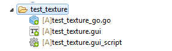
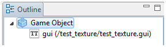
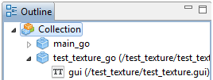

Динамическое создание текстуры в GUI
 Игровой объект  Главная коллекция  |
Основной принцип создания текстуры local w = 200 local h = 300 local orange = string.char(0xff) .. string.char(0x80) .. string.char(0x10) if gui.new_texture("orange_tx", w, h, "rgb", string.rep(orange, w * h)) then local n = gui.new_pie_node(vmath.vector3(200, 200, 0), vmath.vector3(w, h, 0)) gui.set_texture(n, "orange_tx") else print("TEXTURE NOT CREATE!!!") end |
Описание скрипта Gui Script File при нажатии на кнопку мыши будет рисоваться текстура
function init(self)
msg.post(".", "acquire_input_focus")
indexTexture = 0
end
function on_input(self, action_id, action)
if action_id == hash("touch") then
local pos = vmath.vector3(action.x, action.y, 0)
local nameTexture = "orange_tx" .. indexTexture
local w = 50
local h = 50
local orange = string.char(0xff) .. string.char(0x80) .. string.char(0x10)
if gui.new_texture(nameTexture, w, h, "rgb", string.rep(orange, w * h)) then
local n = gui.new_pie_node(pos, vmath.vector3(w, h, 0))
gui.set_texture(n, nameTexture)
indexTexture = indexTexture + 1
print(indexTexture)
else
print("TEXTURE NOT CREATE!!!")
end
end
end
ПРИМЕЧАНИЕ!!! Создать можно не более 128 текстур. В случае превышения этого лимита выдаётся ошибка.
Created with the Personal Edition of HelpNDoc: Full-featured EBook editor